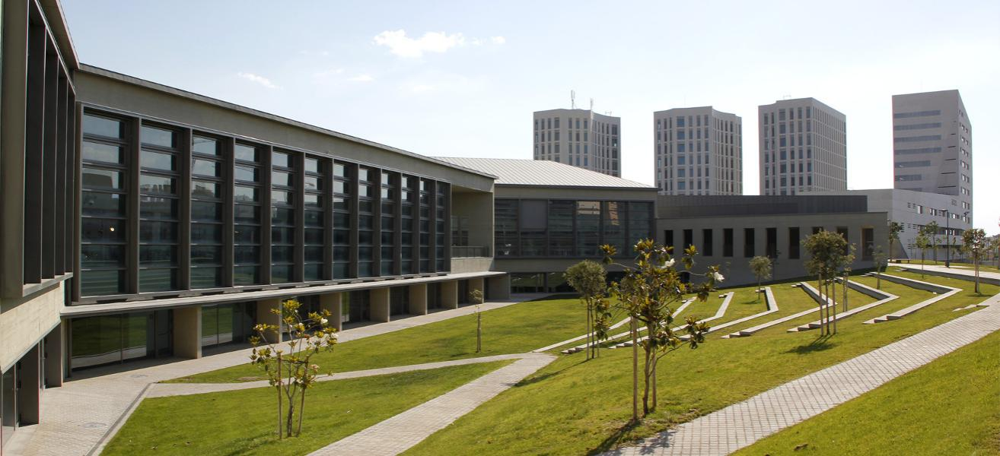
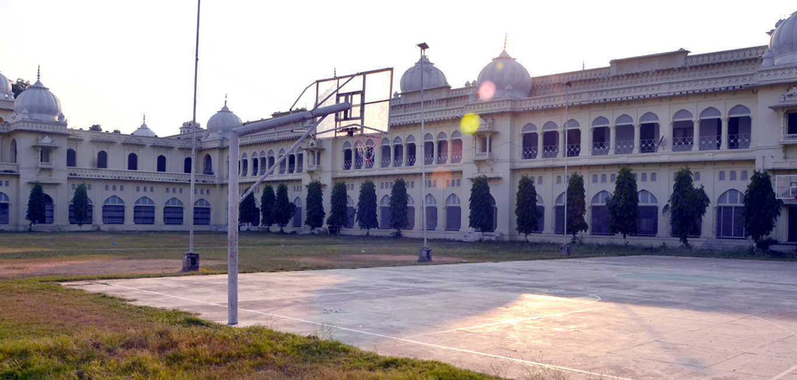
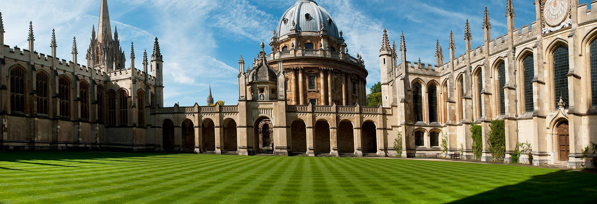

chevron_left
chevron_right
Prof. Dr. Jochem Müller wurde 1964 in Oberrodach / Bayern geboren. Das Geburtsjahr war nach demchinesischen Horoskop das Jahr des Drachens.Der Drache ist in China eines der stärksten Glückssymbole überhaupt.Menschen, die im Zeichen des Drachen geboren sind, sind gesund, energiegeladen und führungsstark.
Er studierte von 1982 bis 1986 Betriebswirtschaftslehre an der Fachhochschule Coburg.Studienschwerpunkte: Organisation und Datenverarbeitung (Prof. Dr. Winkler) und Rechnungswesen (Prof. Dr. Kalweit)
Hochbegabtenförderung der Bayerischen Staatsregierung und Stipendiat der Hanns-Seidel-Stiftung.
11/2008 Verleihung "Zertifikat Dozent für Weiterbildung an Hochschulen"
2010 Gründung des MBA-Studienganges "Kreatives Marketing Management"
2010 Leitung des ESF-Forschungsprojektes TINA
2011 Leitung des Transferzentrums für Innovation und Nachhaltigkeit (TINA)